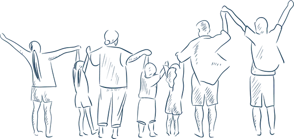
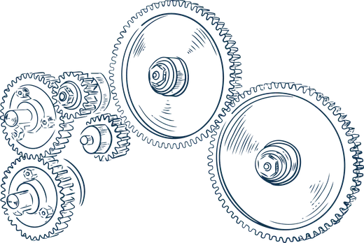

Polares: uw vertrouwenspersoon voor familie en bedrijf
Zoals de noordpoolster
helder en richtinggevend voor uw vermogen
Onze missie
Voor ondernemers en vermogende families beschermen en structureren we hun vermogen en laten we het duurzaam groeien, privé én professioneel, met oog voor vandaag én de generaties van morgen.

Uw familie
Wat u opbouwt, draagt meer dan waarde alleen. Het vertelt een verhaal van ondernemerschap, verantwoordelijkheid en toekomstvisie.
Meer over uw familie
Uw bedrijf
Uw onderneming is meer dan een activiteit of balans. Ze weerspiegelt visie, engagement en jaren van opgebouwd vertrouwen.
Meer over uw bedrijfEen volledig beeld. Een heldere koers.
Klik op een hemellichaam en ontdek zijn betekenis
De betekenis van de hemellichamen
- De Poolster
- Zoals de noordpoolster: helder en richtinggevend. Polares is het vaste punt waarop onze klant koers zet, vandaag en in de toekomst.
- Het zwarte gat
- Onwetendheid over het eigen vermogen, gemiste kansen en onnodige risico's. Onze opdracht is helder: dit zwarte gat verkleinen met inzicht, overzicht en rust.
- De buitenwereld
- Rond het universum beweegt een bredere realiteit: economische evoluties, wetgeving, fiscaliteit en maatschappelijke veranderingen. Wij detecteren ze tijdig en vertalen ze naar duidelijke inzichten.
- Het kompas
- Waar wil onze klant naartoe? Het kompas staat voor wat écht belangrijk is en bepaalt de richting van alle keuzes die we samen maken.
- De GPS
- Het traject dat we samen afleggen. Soms rechtlijnig, soms met een omweg, maar altijd gericht op het doel. Wij zorgen voor opvolging, bijsturing en houvast onderweg.
- Financiële rust
- De munt staat voor wat onze klant nodig heeft om zijn of haar leven te leven: de financiële basis voor bewuste en juiste keuzes.
- De leefwereld
- De wereld van onze klant bestaat uit twee onlosmakelijke delen: familie én onderneming. Wij bekijken ze nooit apart, maar met een 360°-aanpak.
- Onze rol
- Wij nemen de rol op van satelliet: dicht bij de klant, voortdurend meebewegend en proactief inspelend op kansen en risico's in zijn of haar leefwereld.
- Onze expertise
- De lamp staat voor kennis en inzicht. We brengen licht in complexe materie zoals ondernemen, beleggen, erfrecht en fiscaliteit, zodat onze klant met vertrouwen beslist.
- Het vermogen
- De diamant staat voor het totale vermogen, opgebouwd uit meerdere pijlers: vastgoed, beleggingen, onderneming, kunst... Elke facet maakt deel uit van één geheel.
-
Helder overzicht.
We brengen uw volledig vermogen en situatie in kaart zodat alles transparant is.
-
Grondige analyse.
Onze specialisten schatten het potentieel in en brengen kansen en risico’s in kaart.
-
Duidelijke richting.
Samen bepalen we uw doel, dit is richtinggevend voor onze dienstverlening.
-
Bewuste strategie.
Op basis van uw doel worden samen doordachte keuzes gemaakt.
-
Uitvoering.
We voeren de acties uit en spreken ons netwerk aan om de juiste dingen tijdig te doen in lijn met uw doel.
-
Permanente opvolging.
We volgen continu op welke zaken impact hebben op uw vermogen en sturen bij waar nodig.
-
Partnerschap.
Elk jaar herbekijken we uw doel en situatie, en maken we een nieuw overzicht als basis voor het volgende jaar.
Naast u.
Bij Polares begeleiden we niet alleen vermogens, maar vooral de mensen erachter. Met betrokkenheid, expertise en heldere inzichten zorgen we dat elke beslissing bijdraagt aan wat voor u werkelijk van waarde is.
Maak kennis met PolaresExpertise die overzicht brengt. Regie die vertrouwen geeft.
Polares combineert diepgaande expertise met een zorgvuldig uitgebouwd netwerk van gespecialiseerde partners: boekhouders, advocaten en notarissen. Zo benaderen we elke vraag rond vermogen, onderneming en familie vanuit één geïntegreerde visie, met heldere regie over het geheel.
Overzicht en structuren die beschermen, optimaliseren en groeien
Opportuniteiten gesignaleerd, afgestemd op de lange termijn
Rendement, risico en levensdoelen in evenwicht
Helder, correct en gedragen voor alle betrokkenen
Samenhang tussen bedrijfsbeslissingen en privévermogen
Vroeg detecteren, tijdig bijsturen
Waarden die richting geven.
Onze begeleiding vertrekt vanuit duidelijke waarden die bepalen hoe we luisteren, denken en handelen: in elk gesprek, elke analyse en elke beslissing.
Warmte
We luisteren eerst, adviseren daarna.
Vakmanschap
We streven naar uitmuntendheid in elk detail.
Eenvoud
We maken complexe materie helder en hanteerbaar.
Integriteit
We doen wat juist is voor u, ook als niemand kijkt.

VI · CONTACT
Vertrouwen begint met een gesprek.
We nemen graag de tijd om uw wereld te begrijpen en te bekijken waar we kunnen begeleiden.
Vragen die vaak terugkomen.
Wat doet een family office zoals Polares?
Uw family office is het centrale vertrouwensorgaan voor de privézaken van u als ondernemer of vermogende familie. Financiële planning, groeiplanning, successieplanning en de overdracht naar de volgende generatie brengen we samen in één overzicht, zodat beslissingen op elkaar afgestemd blijven.
Voor wie werkt Polares?
Voor ondernemers en vermogende families die hun privévermogen en hun onderneming niet los van elkaar willen bekijken. Onderneming en familie staan bij ons nooit los van elkaar: elke begeleiding vertrekt vanuit één kompas.
Hoe onafhankelijk is het advies van Polares?
Volledig. We ontvangen geen vergoedingen van derden en werken enkel in uw belang. Daardoor blijft onze blik op externe producten en partijen objectief.
Werken jullie samen met mijn boekhouder, notaris of advocaat?
Ja. Polares combineert eigen expertise met een zorgvuldig uitgebouwd netwerk van gespecialiseerde partners: boekhouders, advocaten en notarissen. Wij houden de regie over het geheel, zodat alle adviezen op elkaar aansluiten.
Begeleiden jullie ook een bedrijfsoverdracht of overname?
Ja. We brengen eerst de rendabiliteit van uw bedrijf in kaart via kostenstructuur, marges en cashflow, en bepalen samen een toekomstplan. Bij een fusie of overname treedt Polares op als uw vertrouwenspersoon tijdens het volledige traject.
Hoe verloopt een eerste gesprek?
Vertrouwen begint met een gesprek. Dat eerste gesprek is discreet en vrijblijvend: we luisteren eerst naar uw situatie en uw plannen, en pas daarna bekijken we samen welke begeleiding daarbij past.
Waar is Polares gevestigd?
Ons kantoor ligt in de Dirk Martensstraat 41 in 9300 Aalst. U bereikt ons op +32 54 23 50 50 of via info@polares.be.